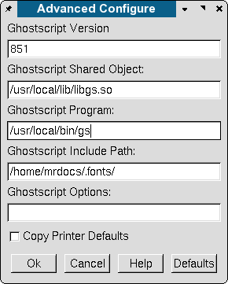

One of the frustrations for users of RPM-based or commercially created distros, is the lack of availability of the latest versions of Ghostscript(GS). Because of the differences in licensing between the GPL Ghostscript and AFPL Ghostscript, GPL Ghostscript releases usually follow by about a year, the release of the most up to date AFPL GS. Because, there are certain restrictions in AFPL, most Linux distros ship an older and heavily patched version of GPL Ghostscript.
As the current GS 8.x resource configuration is new, simply dropping in the latest GS tarball and rebuilding the RPM does not quite work. Lord knows I've tried on Red Hat and I consider myself to be pretty well versed in RPM building. If you have ever seen the Red Hat or SuSE rpm spec file for GS, you will know what I mean. ;)
So, why do I want to go to the trouble of worrying about having the absolute latest version of GS? Easy.
Image processing programs are one area where compiler optimizations do make a difference.
So, how does one get the latest GS for Scribus and GSview - without breaking your existing distro printing setup ? The secret: a parallel build of GS.
Disclaimer: This works for me. It could wreck you system, catch your hair on fire and other nastiness.
First Steps:
-with-jasper and -with-rinkj with very latest versions):
By default, `make install' will install all the files in `/usr/local/bin', `/usr/local/lib' etc. You can specify an installation prefix other than `/usr/local' using `--prefix', for instance `
This default usually works fine and keeps the two sets of GS libs separated.
Second Steps:
There is a second step to compile Ghostscript as a shared library, which GSview needs:
and as root:
Now, let's check briefly:
You should have an output something like this:
AFPL Ghostscript 8.51 (2005-04-18) Copyright (C) 2005 artofcode LLC, Benicia, CA. All rights reserved. Usage: gs [switches] [file1.ps file2.ps ...] Most frequently used switches: (you can use # in place of =) -dNOPAUSE no pause after page | -q `quiet', fewer messages -g<width>x<height> page size in pixels | -r<res> pixels/inch resolution -sDEVICE=<devname> select device | -dBATCH exit after last file -sOutputFile=<file> select output file: - for stdout, |command for pipe, embed %d or %ld for page # Input formats: PostScript PostScriptLevel1 PostScriptLevel2 PostScriptLevel3 PDF Default output device: x11 Available devices: bbox bit bitcmyk bitrgb bj10e bj200 bjc600 bjc800 bmp16 bmp16m bmp256 bmp32b bmpgray bmpmono bmpsep1 bmpsep8 cdeskjet cdj550 cdjcolor cdjmono cljet5 cljet5c deskjet devicen djet500 epswrite faxg3 faxg32d faxg4 ijs jpeg jpeggray laserjet lj5gray lj5mono ljet2p ljet3 ljet3d ljet4 ljet4d ljetplus nullpage pbm pbmraw pcx16 pcx24b pcx256 pcxcmyk pcxgray pcxmono pdfwrite pgm pgmraw pgnm pgnmraw pj pjxl pjxl300 pkm pkmraw pksm pksmraw png16 png16m png256 pngalpha pnggray pngmono pnm pnmraw ppm ppmraw psdcmyk psdrgb psgray psmono psrgb pswrite pxlcolor pxlmono spotcmyk tiff12nc tiff24nc tiffcrle tiffg3 tiffg32d tiffg4 tifflzw tiffpack uniprint x11 x11alpha x11cmyk x11gray2 x11gray4 x11mono xcf Search path: . : /home/peter/.fonts : /usr/local/share/ghostscript/8.51/lib : /usr/local/share/ghostscript/8.51/Resource : /usr/share/ghostscript/fonts
The key thing here is:
If you are concerned about messing about with your existing packaging setup, you could use: checkinstall or Xstow. These programs will keep track of applications which are outside of your normal packaging system. I have used checkinstall with good luck in these kinds of situations on RedHat systems.
Next,if installed, open up GSview and go to Options.. > Advanced Configure. Then, make sure the "Ghostscript Shared Object" is pointing at the correct libgs.so. Below is how I have setup GSview on my system.:
|  |
Next, we need to tell Scribus where to find the newer GS. Go Edit..> Preferences.. >General. Then in External Tools, add the path the new GS.
|
Another tool which is available with GSview is epstool. An older version is shipped with the current GSview 4.7, but a newer one is available on the GSview home page. This is a great command line tool, which can perform advanced EPS/DCS 2.0 conversion. This is very useful when someone sends you an EPS file from other DTP applications - even those created on Macs. Upgrading this to work with GSview gives you excellent support on Linux to handle EPS files from all platforms. Recommended.
Lastly, one other tool which works as a plug-in with GSview is pstoedit This is a command line tool for converting bitmap images into vectors and PostScript, which then, depending on the nature of the image, can be edited in a vector drawing tool like Inkscape or Skencil. See the section Import Hints for hints on how I used this to convert the Scribus logo into SVG and then a native Scribus file. GSview uses this as a plug-in to convert files into vector format.
GSview has been, in my experience, the most reliable and versatile EPS/PS viewer on Linux. How good is it ? Well, the best example is letting you know this usually installed on every Windows DTP workstation I support for clients. For DTP with Scribus, I consider it essential.